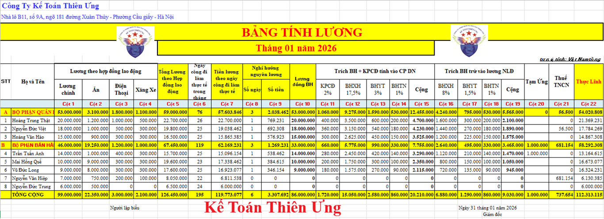
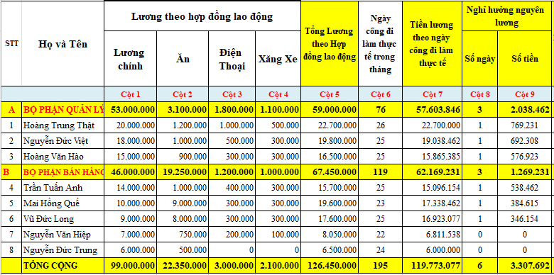
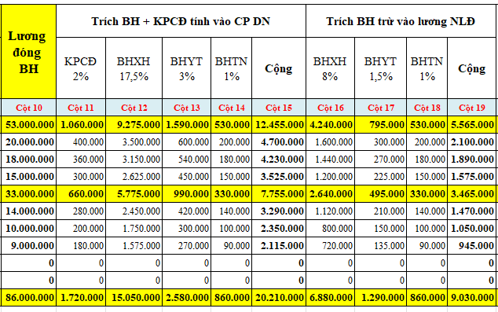
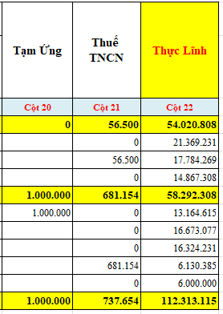

Mẫu bảng thanh toán tiền lương Excel theo Thông tư 133 và Thông tư 99 mới nhất 2026. Đây là mẫu bảng tính lương và các khoản theo lương như BHXH, Thuế TNCN, giảm trừ ... chi tiết nhất do Kế toán Diệu Tâm thiết kế.
Theo Thông tư 99/2025/TT-BTC và Thông tư 133/2016/TT-BTC thì DN được tự thiết kế Mẫu bảng tính lương, thanh toán tiền lương phù hợp với đặc điểm của DN.
----------------------------------------------------------------------------
- Đây cũng là mẫu bảng tính lương và các khoản theo lương như: Tỷ lệ trích các khoản BHXH, Thuế TNCN, các khoản giảm trừ, các khoản phụ cấp ...

(Hình ảnh giao diện mẫu bảng thang toán tiền lương trên Excel)
Để cho các bạn dễ nhìn số liệu tại các cột trong bảng tính lương trên thì Kế Toán Diệu Tâm xin được chia bảng tính lương trên ra làm 3 phần như sau:
Phần 1: Tính lương theo ngày công đi làm thực tế và những ngày nghỉ hưởng nguyên lương trong tháng:

+ Cột 7 là tính lương theo ngày công đi làm thực tế trong tháng:
Căn cứ để tính phần 1 này chính là: Hợp đồng lao động, bảng chấm công và quy chế lương thưởng của công ty
Kế Toán Diệu Tâm mời các bạn tham khảo thêm: Mẫu bảng chấm công
+ Còn cột 8 và cột 9 là tính lương cho những ngày nghỉ hưởng nguyên lương
Trong tháng 1/2026 có 1 ngày nghỉ lễ tết được hưởng nguyên lương đó là: Tết Dương lịch 1 ngày 01/01/2026
Chi tiết về cách tính lương cho những ngày này thì Kế Toán Diệu Tâm mời các bạn tham khảo tại đây: Cách tính lương ngày nghỉ lễ Tết hưởng nguyên lương 2026
Chi tiết về cách tính lương cho những ngày này thì Kế Toán Diệu Tâm mời các bạn tham khảo tại đây: Cách tính lương ngày nghỉ lễ Tết hưởng nguyên lương 2026
Phần 2: Trích bảo hiểm theo lương đóng bảo hiểm:

Căn cứ để tính phần 2 này chính là: Mức lương tham gia bảo hiểm trên Hồ sơ tham gia bảo hiểm của NLĐ, quy định về tỷ lệ trích nộp bảo hiểm bắt buộc
Kế Toán Diệu Tâm mời các bạn tham khảo thêm: Tỷ lệ trích bảo hiểm 2026 (BHXH, BHYT, BHTN, KPCĐ) mới nhất
Phần 3: Các khoản trừ vào lương và số lương còn lại NLĐ được nhận:

Căn cứ để tính phần 2 này chính là: Hồ sơ tạm ứng tiền lương của NLĐ, bảng tính thuế TNCN
Kế Toán Diệu Tâm mời các bạn tham khảo thêm: Mẫu bảng tính thuế TNCN
Mục đích của Bảng thanh toán tiền lương là: Chứng từ làm căn cứ để thanh toán tiền lương, phụ cấp, các khoản thu nhập tăng thêm ngoài tiền lương cho người lao động, kiểm tra việc thanh toán tiền lương cho người lao động làm việc trong doanh nghiệp đồng thời là căn cứ để thống kê về lao động tiền lương.
- Bảng thanh toán tiền lương được lập hàng tháng. Cơ sở để lập Bảng thanh toán tiền lương là các chứng từ liên quan như: Bảng chấm công, phiếu xác nhận sản phẩm hoặc công việc hoàn thành...
- Cuối mỗi tháng căn cứ vào chứng từ liên quan, kế toán tiền lương lập Bảng thanh toán tiền lương chuyển cho kế toán trưởng soát xét xong trình cho giám đốc hoặc người được ủy quyền ký duyệt, chuyển cho kế toán lập phiếu chi và phát lương. Bảng thanh toán tiền lương được lưu tại phòng (ban) kế toán của đơn vị.
- Mỗi lần lĩnh lương, người lao động phải trực tiếp ký vào cột “Ký nhận” hoặc người nhận hộ phải ký thay.
-----------------------------------------------------------------------------
Các bạn muốn tải (download) Mẫu bảng thanh toán tiền lương Excel mới nhất năm 2026 trên đây về để tham khảo và sử dụng thì có thể gửi mail về địa chỉ mail: ketoandieutam@gmail.com
=> Kế Toán Diệu Tâm sẽ gửi lại Mẫu bảng thanh toán tiền lương Excel mới nhất năm 2026 này cho các bạn
Hoặc các bạn muốn tải theo mẫu của Thông tư 99/2025/TT-BTC thì có thể tải về tại đây:
Mẫu bảng thanh toán tiền lương theo Thông tư 99
------------------------------------------------------------------------------------------------
------------------------------------------------------------------------------------------------
Những chú ý khi làm Bảng thanh toán tiền lương:
- Không chỉ dựa vào Bảng chấm công, phiếu xác nhận sản phẩm hoàn thành công việc ...-> Mà các bạn còn phải dựa vào:
+ Hợp đồng lao động
+ Mức lương tối thiều vùng mới nhất.
+ Các khoản thu nhập chịu thuế và không chịu thuế TNCN.
+ Tính được thuế TNCN phải nộp.
+ Các khoản đóng và không phải đóng BHXH.
+ Tỷ lệ trích các khoản Bảo hiểm vào chi phí Doanh nghiệp và trích vào Lương người lao động...
=> Bảng thanh toán tiền lương có thể gọi là Bảng tổng hợp chi phí liên quan đến Tiền lương của người lao động.
Để hiểu rõ hơn và chi tiết mời các bạn xem thêm:
-------------------------------------------------------------------------------------------
Các bạn muốn học thực hành làm kế toán tổng hợp trên chứng từ thực tế, thực hành xử lý các nghiệp vụ hạch toán, tính thuế, kê khai thuế tháng/quý, tính lương, trích khấu hao....lập báo cáo tài chính, quyết toán thuế cuối năm ... thì có thể tham gia: Lớp học thực hành kế toán thực tế tại Kế toán Diệu Tâm
__________________________________________________